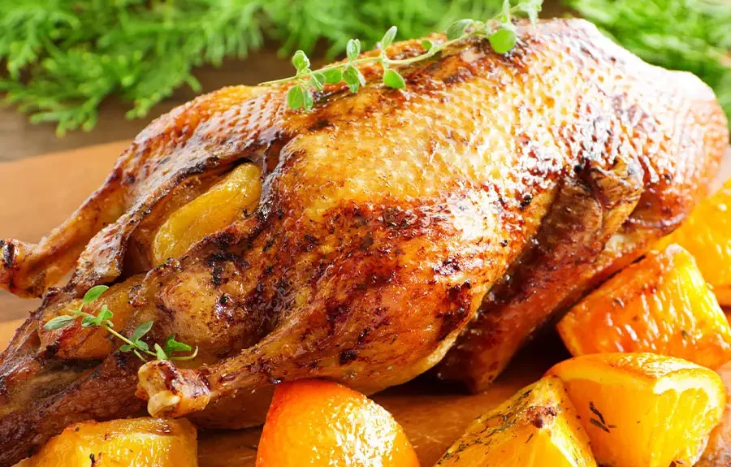

Duck with Oranges

Description
As in the title, the dish is composed of two parts: a crispy duck staked in the oven to golden brown colour, and the sweet and sour, orange flavoured sauce. The duck needs generous seasoning with salt and pepper. One can brush it with orange zest a bit, fill it with a bunch of garlic, a sprig of thyme, an orange cut in two. It should sit in the oven at least 1.5 hours (twenty minutes per pound of weight plus 15 minutes to start off) at 170-180oC. The sauce can be prepared separatedly if one has some dark stock (2 glasses), or together with roasting duck by laying it on a bed of chopped vegetables. Orange zest requires blanching in boiling water. Sweet and sour taste is achieved by combining the sause foundaton with gastrique - a mixture of red wine vinegar and sugar reduced to syrop. When completed successfully it is a feast for the eyes and taste buds!
Ingrediences
The duck:
- a whole duck (will typically feed 3-4 persons depending on side dishes)
- a sprig of thyme
- one big orange
- salt and pepper
- 3-5 carrots, 3-5 ribs of cellery, 1-2 onions
The sauce:
- zest of 3 oranges and 1 lemon
- juice of 3 oranges and 1 lemon
- 150gr sugar and 150gr red wine vinegar to make gastrique
- 1-2 glasses brown stock or demi-glaze
- 2 tbsp orange liquer e.g. Grand Marnier or Cointreau
Steps
Roasting the duck - temp. 170-180oC in about 1.5 hrs.
- chop off wing tips, excess of skin on the neck, remove fat bits from cavity - these can be used to prapare foundation for the sauce
- Chopp vegetables and an orange.
- Season the duck carcass generously with salt and pepper. Spread some orange zest on the skin to add orange flavour
- Add thyme, some of the vegetables and a whole orange cut in half into the cavity
- Prick the skin with a tip of a knife or a fork to allow excess of the fat out
- Sear the duck on all the sides in a bit of duck fat in the oven-proof pan
- Add wings, neck and excess fat trimmed earlier to the pan, add chopped veg plus one chopped orange
- Flambe the mixture with Grand Marnier
- When the flame is extinguished, put the duck on the mixture and set it in the oven for 1 - 1.5 hour. Check the colour of the meat juices to determine if it`s cooked
- when duck is ready, take it out, keep sauce foundation on the heat to reduce
Making the sauce
- zest 3 oranges and 1 lemon
- blench the zest in the boiling water for 5 minutes to make it tender, strain it and put in cold water when finished to stop cooking, and dry it with paper towel
- prepare gastrique in another pot by cooking and reducing 150gr suger and 150gr vinegar
- Add juice from oranges and a lemon
- Add demi-glaze or brown stock to the sauce foundation, bring it to the boil
- Add the gastrique with orange and lemon juice
- Reduce the sauce, strain it, press all the veg bits to get most flavour out